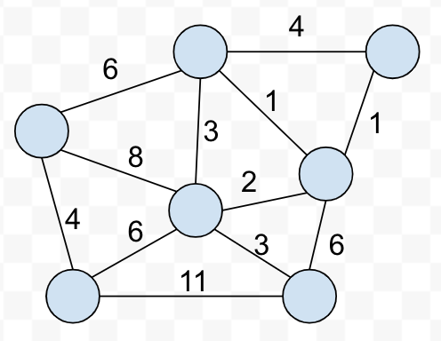
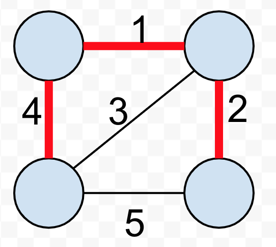

Computer Science 2: Algorithms
Detroit Labs Dev Coaching
2018
Lecture 8
Practice Problem
You are tasked with organizing \(n\) politicians for a procession. You are given \(m\) rules about organizing them by prestige of the form "\(i\) must precede \(j\)" such that the most fickle of them do not cause a scene.
- Give an algorithm that orders them in O(n+m) time.
- Later, they must stand in rows. If \(i\) must precede \(j\), \(i\) must be in an earlier row than \(j\). Give an efficient algorithm to find the minimum number of rows needed.
Weighted Graph Algorithms

Minimum Spanning Trees

Who cares?

Prim's Algorithm

Let's try it out

Prim's in english
Prim-MST(G)
Select an arbitrary vertex s to start the tree from.
While (there are still non-tree vertices)
Select min weight edge between tree/non-tree vertices
Add the selected edge and vertex to the tree Tprim.
Prim's is always minimum
- Must be a graph \(G\) where Prim's doesn't produce MST
- If so, must be an edge \((x,y)\) such that we cannot extend the subgraph \(V\prime\) to an MST
- If \((x,y) \notin MST(G)\), it must contain a path connecting \(x\) and \(y\)
- Let \((u,v)\) be another edge adjacent to \(V\prime\)
- If the edge \((u,v)\) still eventually connects \(x\) and \(y\), but \((x,y)\) was less weight, it was not an MST
MST for Traveling Salesman

How Fast is Prim's?
Select an arbitrary vertex to start.
While (there are non-tree vertices)
select minimum weight edge between tree and fringe
add the selected edge and vertex to the tree
Toward a faster Prim's
Prim's Analysis
- Find the minimum weight fringe edge
- Add vertex to tree
- Compare new edges from vertex with known to find cheapest
Total time is \(n \times (n + m) = O(n^2)\)
Kruskal's Algorithm

Let's try it out
Kruskal's always the minimum
- Must be a graph \(G\) where Kruskal's doesn't produce MST
- If so, must be an edge \((x,y)\) such that we cannot add to the MST
- When we added \((x,y)\), there was no path from \(x\) to \(y\) we would have a cycle. So adding \((x,y)\) now must create a cycle.
- At least one edge must have been added after \((x,y)\) so it must be heavier.
How fast is Kruskal's
- Sort the \(m\) edges in \(O(m \log m)\)
- ∀ edges, check for a cycle. If no cycle, add to forest.
Union-Find
find(i)- Return the root of the tree containing \(i\)union(i,j)- Link root of \(i\) to root of \(j\) so \(find(i) == find(j)\)